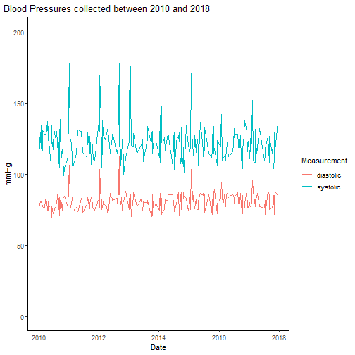

on
Enabling Data Science in DIPS
At DIPS we are currently productionizing our new electronic health record (EHR) system, DIPS Arena. With DIPS Arena we have made the move to store structured clinical data with openEHR. openEHR is an open technology for e-health systems that help different vendors to build interoperable systems for healthcare. In other words, it helps define the different clinical concepts, e.g. blood pressures, body temperatures etc, how we can represent them, and how we can retrieve them from systems that implement an openEHR API. While there is a lot of detailed information on openEHR, I believe that we only have to care about how we can get data from an openEHR server to begin analyzing data in our EHR system. If you want to learn more about openEHR, please take a tour of openehr.org.
How to get data
To get data from DIPS Arena, or an openEHR server, we execute Archetype Query
Language (AQL)
queries. These look like your usual database queries, with
select, from, and where clauses. For example if we want to get all blood
pressures stored in our EHR system we can execute the query
select c
from composition c
contains observation o[openEHR-EHR-OBSERVATION.blood_pressure.v1]
which will return either an XML or JSON representation of the result.
To summarize the above query, we select all compositions that contain an blood
pressure (openEHR-EHR-OBSERVATION.blood_pressure.v1) observation. A
Composition is a container where we store information. All information stored
within an openEHR system is contained within compositions. These compositions
may hold any type of data, so by supplying a contains we can specify that we
only want the compositions with a specific observation. Observations are
special containers that are ment for recording clinical observations and any
additional metadata. Typical observations are blood pressures, body weights,
heights. Metadata may be information about the data collection method, what type
of instrument was used, etc.
The first lines from the JSON result from the above query are as follows:
{
"_type": "RESULTSET",
"meta": {
"_type": "RESTULTSET",
"_schema_version": "1.0.0",
"_created": "2020-04-14T08:28:38.1538856Z",
"_generator": "DIPS.openEHR.dll (5.0.0.0)"
},
"name": null,
"totalResults": 427,
"columns": [
{
"name": "c",
"path": ""
}
],
"rows": [
[
{
"_type": "COMPOSITION",
"archetype_node_id": "openEHR-EHR-COMPOSITION.encounter.v1",
"name": {
"value": "Klinisk kontakt"
},
"uid": {
"_type": "OBJECT_VERSION_ID",
"value": "7da88898-0a36-4ca3-b972-111999ed16ee::dips::1"
},
To summarize, the resultset contains 427 compositions, and these can be found in
the rows object of the resultset.
Since we are usually just interested in the actual measurements (systolic and diastolic) of a blood pressure, we can re-write the AQL query to get just the measurements we are interested in:
select
c/content[openEHR-EHR-OBSERVATION.blood_pressure.v1]/data[at0001]/events[at0006]/time/value as datetime,
c/content[openEHR-EHR-OBSERVATION.blood_pressure.v1]/data[at0001]/events[at0006]/data[at0003]/items[at0004]/value/magnitude AS systolic,
c/content[openEHR-EHR-OBSERVATION.blood_pressure.v1]/data[at0001]/events[at0006]/data[at0003]/items[at0005]/value/magnitude AS diastolic
from
composition c
contains observation o[openEHR-EHR-OBSERVATION.blood_pressure.v1]
This query is a bit more complex. Especially the openEHR path syntax
(the c/content[openEHR-EHR ... /time/value part of the query) might be a bit
unfamiliar. This is the syntax we use to extract specific parts of the stored
information. The openEHR paths in the query will depend on the data we are
querying for, but we can execute the same query on any openEHR implementation
and get the same results.
In short the query get the datetime when a blood pressure was measured, as
well as the systolic and diastolic measurements of the blood pressure. The
resultset now looks like, where the measurements are found in the rows array.
{
"_type": "RESULTSET",
"meta": {
"_type": "RESTULTSET",
"_schema_version": "1.0.0",
"_created": "2020-04-14T10:52:16.3735268Z",
"_generator": "DIPS.openEHR.dll (5.0.0.0)"
},
"name": null,
"totalResults": 427,
"columns": [
{
"name": "datetime",
"path": "/content[openehr-ehr-observation.blood_pressure.v1]/data[at0001]/events[at0006]/time/value"
},
{
"name": "systolic",
"path": "/content[openehr-ehr-observation.blood_pressure.v1]/data[at0001]/events[at0006]/data[at0003]/items[at0004]/value/magnitude"
},
{
"name": "diastolic",
"path": "/content[openehr-ehr-observation.blood_pressure.v1]/data[at0001]/events[at0006]/data[at0003]/items[at0005]/value/magnitude"
}
],
"rows": [
[
"2010-06-08T10:26:51.037+02:00",
124.37659794247064,
77.51167721740681
],
[
"2011-01-15T19:53:52.844+01:00",
115.18465581503439,
80.17813862922695
],
Analyzing openEHR data in R
The R programming language, along with the
tidyverse makes it is easy to get started with data
analysis. And to make it simpler for us to get data from an openEHR server, we
have developed the openehR R package!
library(openehR)
With the openehR package we simply specify where the server is running, and
can then begin executing queries.url is the address of the openEHR REST API
endpoint, e.g. http://our-openehr-server/openehr/.
query <- "
select
c/content[openEHR-EHR-OBSERVATION.blood_pressure.v1]/data[at0001]/events[at0006]/time/value as datetime,
c/content[openEHR-EHR-OBSERVATION.blood_pressure.v1]/data[at0001]/events[at0006]/data[at0003]/items[at0004]/value/magnitude AS systolic,
c/content[openEHR-EHR-OBSERVATION.blood_pressure.v1]/data[at0001]/events[at0006]/data[at0003]/items[at0005]/value/magnitude AS diastolic
from
composition c
contains observation o[openEHR-EHR-OBSERVATION.blood_pressure.v1]
"
data = openehR::query(url, query)
kable(head(data), format="markdown")
| datetime | systolic | diastolic |
|---|---|---|
| 1974-09-16T16:04:10.192+02:00 | 115.974085828937 | 76.9071249676342 |
| 2010-06-23T05:48:49.751+02:00 | 117.079215488876 | 72.4198362220667 |
| 2010-06-26T05:15:34.312+02:00 | 132.302621087754 | 73.1356662638138 |
| 2009-10-10T03:22:05.666+02:00 | 123.306499231151 | 76.388229647742 |
| 2010-07-07T00:21:22.182+02:00 | 128.873904091379 | 75.7725081884796 |
| 2010-10-17T05:50:07.97+02:00 | 112.089627114461 | 83.3618799992845 |
Since this is an initial version of the openehR package, we leave it
up to the caller to convert the variables to the correct data type. In
future versions we’ll do this automatically. But, with dplyr it’s
an easy step to make sure that the dates are actual date_times and
that the blood pressure measurements are numeric.
data = data %>%
mutate(datetime = lubridate::parse_date_time(datetime, "YmdHMOSz")) %>%
mutate(systolic = as.numeric(as.character(systolic))) %>%
mutate(diastolic = as.numeric(as.character(diastolic))) %>%
arrange(desc(datetime))
With the variables converted we can start plotting the data. Let’s have a look at the measurements between 2010 and 2018.
data %>%
filter(datetime > lubridate::ymd("2010-01-01")) %>%
filter(datetime < lubridate::ymd("2018-01-01")) %>%
ggplot(aes(x=datetime)) +
geom_line(aes(y=systolic, color="systolic")) +
geom_line(aes(y=diastolic, color="diastolic")) +
theme_classic() +
theme(plot.title.position = "plot") +
labs(title="Blood Pressures collected between 2010 and 2018",
color="Measurement") +
ylab("mmHg") +
xlab("Date") +
ylim(0,200)

We could go on and on with more visualizations, and analysis of the different data stored in our openEHR server, but I think this will do for this blog post. I hope I have given you an example of how we can leverage the structured clinical data stored in an openEHR server, and specifically DIPS Arena.
If you have any questions or comments, please drop me an e-mail at bfj@dips.no!